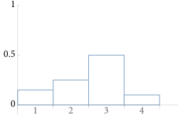
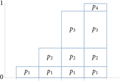
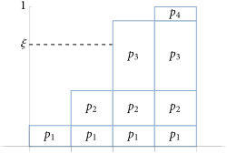

2.3 使用反演法进行采样（Sampling Using the Inversion Method）
为了评估方程（2.7）中的蒙特卡洛估计，有必要能够从选定的概率分布中抽取随机样本。实现这一点有多种技术，但对于渲染而言，最重要的方法之一是 反演法（inversion method） ，它通过反转分布的累积分布函数（CDF）来将 \( [0,1) \) 的均匀样本映射到给定的一维概率分布。（在第 2.4.2 节中，我们将看到如何通过鉴于一系列一维分布将这种方法应用于高维函数。）当与第 8 章中定义的采样器生成的分布良好的样本一起使用时，反演法可以特别有效。在本书的其余部分，我们将看到反演法在从 BSDF、光源、相机和散射介质定义的分布中生成样本的应用。
2.3.1 离散情况（Discrete Case）
方程（2.2）导出了一个使用均匀随机变量从一组离散概率中采样的算法。假设我们有一个过程，其可能的四个结果的概率分别为 \( p_1 \) 、 \( p_2 \) 、 \( p_3 \) 和 \( p_4 \) ，总和为 \( \sum_{i} p_i = 1 \) 。相应的概率质量函数（PMF）如图 2.3 所示。
图 2.3：四个事件的 PMF ，每个事件的概率为 \( p_i \) 。 它们的概率之和 \( \sum_{i} p_i \) 必然为 1。
方程（2.2）中的和与累积分布函数（CDF）的定义之间存在直接联系。离散的 CDF 由以下公式给出
\[
P_i = \sum_{j=1}^{i} p_j
\]
可以通过将概率质量函数（PMF）的条形图从左侧开始逐个叠加来图形化解释。这一思想在图 2.4 中展示。
图 2.4：离散 CDF ，对应于图 2.3 中的 PMF。 每一列的高度由其所代表事件的 PMF 加上之前事件的 PMF 之和给出， \( P_i = \sum_{j=1}^{i} p_j \) 。
方程 (2.2) 的采样操作可以表示为寻找 \( i \) 使得
\[
P_{i-1} \leq \xi < P_i
\]
可以将其解释为反转 CDF \( P \) ，该技术也因此得名。继续图形解释，这种采样操作可以被视为将事件的概率投影到纵坐标的 \( [0,1] \) 范围上，并使用随机变量 \( \xi \) 在它们之间进行选择（见图 2.5）。显然，这是从正确的分布中抽取的——均匀样本击中任何特定条形的概率恰好等于该条形的高度。
SampleDiscrete() 函数实现了该算法。它接受一组不一定归一化的非负权重、一个均匀随机样本 u ，并返回一个权重的索引，其概率与该权重成正比。它执行的采样操作对应于寻找 \( i \) 使得
\[
\sum_{i=1}^{i-1} w_j \leq \xi \sum w_i < \sum_{j=1}^{i} w_j
\]
这对应于将方程（2.19）乘以 \( \sum w_i \) 。（不要求归一化的 PMF 对于调用代码来说是一种便利，并且在函数的实现中并没有太多额外的工作。）提供了两个可选参数，以返回样本的 PMF 值以及一个新的均匀随机样本，该样本源自 u 。
该函数旨在处理仅需从权重分布中生成单个样本的情况；如果需要多个样本，则通常应使用将在 A.1 节中介绍的 AliasTable ：它在经过一个 \( O(n) \) 的预处理步骤后以 \( O(1) \) 时间生成样本，而 SampleDiscrete() 则需要为每个生成的样本花费 \( O(n) \) 时间。
/** 采样内联函数（Sampling Inline Functions） */
int SampleDiscrete(pstd::span<const Float> weights, Float u, Float *pmf,
Float *uRemapped) {
/** 处理离散采样的空权重（Handle empty **weights** for discrete sampling）*/
/** 计算权重的总和（Compute sum of **weights**）*/
/** 计算重缩放后的 u' 样本（Compute rescaled u' sample）*/
/** 在权重中找到 u' 对应的偏移量（Find offset in **weights** corresponding to u'）*/
/** 计算 PMF 并重新映射 u 的值（如有必要）（Compute PMF and remapped u value, if necessary）*/
return offset;
}
首先处理 weights 为空的情况，以便后续代码可以假设至少存在一个权重。
/** 处理离散采样的空权重（Handle empty **weights** for discrete sampling）*/
if (weights.empty()) {
if (pmf)
*pmf = 0;
return -1;
}
采样第 i 个元素的离散概率由 weights[i] 除以所有权重值的总和给出。因此，该函数接下来计算该总和。
/** 计算权重的总和（Compute sum of **weights**）*/
Float sumWeights = 0;
for (Float w : weights)
sumWeights += w;
根据方程（2.20），均匀样本 u 通过权重之和进行缩放，以获得值 \( u' \) ，该值将用于从中进行采样。尽管提供的 u 值应在范围 \( [0,1) \) 内，但由于浮点数舍入的原因， u * sumWeights 可能等于 sumWeights 。在这种罕见情况下， up 被降低到下一个较低的浮点值，以便后续代码可以假设 up < sumWeights 。
/** 计算重缩放后的 u' 样本（Compute rescaled u' sample）*/
Float up = u * sumWeights;
if (up == sumWeights)
up = NextFloatDown(up);
我们现在想要找到权重数组 \( i \) 中最后一个使随机样本 up 大于 \( i \) 之前权重总和的偏移量。采样是通过从数组开头开始的线性搜索进行的，累积权重总和，直到该总和大于 \( u' \)。
/** 在权重中找到 u' 对应的偏移量（Find offset in **weights** corresponding to u'）*/
int offset = 0;
Float sum = 0;
while (sum + weights[offset] <= up)
sum += weights[offset++];
在 while 循环终止后，提供的样本 u 中的随机性仅用于选择数组中的一个元素——一个离散选择。样本在包围它的 CDF 值之间的偏移量本身是一个均匀随机值，可以很容易地重新映射到 \( [0,1) \) 。如果请求，该值将在 uRemapped 中返回给调用者。
有人可能会问：为什么要这样做？生成均匀随机变量并不太困难，因此提供这个选项的好处似乎微不足道。然而，对于第 8 章中一些高质量的样本生成算法，以这种方式重用样本而不是生成新样本可能是有益的——因此，提供了这个选项。
/** 计算 PMF 并重新映射 u 的值（如有必要）（Compute PMF and remapped **u** value, if necessary）*/
if (pmf)
*pmf = weights[offset] / sumWeights;
if (uRemapped)
*uRemapped = std::min((up - sum) / weights[offset], OneMinusEpsilon);
图 2.5： 为了使用反演方法从图 2.3 中的 PMF 描述的分布中抽取样本，标准均匀随机变量（canonical uniform random variable）被绘制在纵轴上。根据构造， \( \xi \) 的水平延伸线将以概率 \( p_i \) 与表示第 \( i \) 个结果的框相交。如果为一组随机变量 \( \xi \) 选择了相应的事件，则结果事件的分布将根据 PMF 进行分布。
2.3.2 连续情况（Continuous Case）
为了将这一技术推广到连续分布，考虑当离散可能性的数量趋近于无穷大时会发生什么。图 2.3 中的概率质量函数（PMF）变为概率密度函数（PDF），而图 2.4 中的累积分布函数（CDF）则变为其积分。投影过程仍然相同，但它具有一个方便的数学解释——它表示对 CDF 进行反转并在 \( \xi \) 处评估逆值。
更准确地说，我们可以通过以下步骤从 PDF \( p(X) \) 中抽取样本 \( X_i \) ：
-
对 PDF 积分以找到 CDF \( P(x) = \int_{0}^{x} p(x') \text{d} x' \).†（一般来说，积分的下限应该是 -∞，不过如果 p(x) = 0 且 x < 0，那么这个方程是等效的。）
-
获取一个均匀分布的随机数 \( \xi \) 。
-
通过求解 \( \xi = P(X) \) 来为 \( X \) 生成一个样本；换句话说，找到 \( X = P^{-1}(\xi) \) 。
我们将用一个简单的例子来说明这个算法；有关其在多个附加函数中的应用，请参见 A.4 节。
采样线性函数（Sampling a Linear Function）
函数 \( f(x) = (1-x)a + xb \) 在 \( [0,1] \) 上定义，在 \( x = 0 \) 的 \( a \) 和 \( x = 1 \) 的 \( b \) 之间线性插值。这里我们将假设 \( a,b \geq 0 \) ；章节末尾有一个练习讨论了更一般的情况。
/** 数学内联函数（Math Inline Functions） */
Float Lerp(Float x, Float a, Float b) {
return (1 - x) * a + x * b;
}
该函数的积分为 \( \int_{0}^{1} f(x) \text{d}x = (a+b)/2 \) ，这给出了归一化常数 \( 2/(a+b) \) 以定义其 PDF,
\[
p(x) = \frac{2f(x)}{a+b}
\]
/** 采样内联函数（Sampling Inline Functions） */
Float LinearPDF(Float x, Float a, Float b) {
if (x < 0 || x > 1)
return 0;
return 2 * Lerp(x, a, b) / (a + b);
}
对 PDF 积分得到 CDF，其为二次函数
\[
P(x) = \frac{x(a(2-x) + bx)}{a+b}
\]
反转 \( \xi = P(X) \) 给出了一个采样方案
\[
X = \frac{a - \sqrt{(1 - \xi)a^2 + \xi b^2}}{a-b}
\]
请注意，在这种形式下，当 \( a=b \) 时会给出一个不确定的结果。更稳定的方程
\[ X = \frac{\xi(a+b)}{a+\sqrt{(1-\xi)a^2 + \xi b^2}} \]
计算出相同的结果，并在此实现。
/** 采样内联函数（Sampling Inline Functions） */
Float SampleLinear(Float u, Float a, Float b) {
if (u == 0 && a == 0) return 0;
Float x = u * (a + b) / (a + std::sqrt(Lerp(u, Sqr(a), Sqr(b))));
return std::min(x, OneMinusEpsilon);
}
需要注意的一个细节是返回语句中的 std::min 调用，它确保返回的值在范围 \( [0,1) \) 内。尽管采样算法在给定 \( \xi \in [0,1) \) 的情况下会生成该范围内的值，但舍入误差可能导致结果等于 1。由于一些调用采样例程的代码依赖于返回值在指定范围内，因此采样例程必须确保这一点。
除了提供从分布中采样和计算样本的 PDF 的函数外， pbrt 通常还提供反转采样操作的函数，返回与值 \( x \) 对应的随机样本 \( \xi \) 。在一维情况下，这相当于评估 CDF。
/** 采样内联函数（Sampling Inline Functions） */
Float InvertLinearSample(Float x, Float a, Float b) {
return x * (a * (2 - x) + b * x) / (a + b);
}